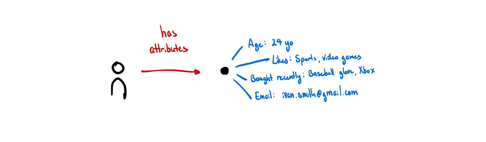
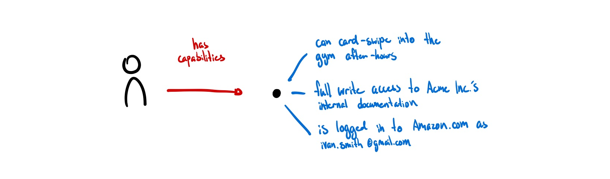
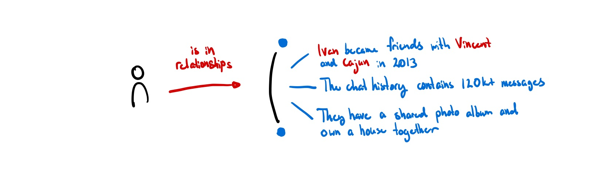

What is identity? Who defines it? Who controls it? What is its relationship to software?
Software developers and computer scientists have been tackling identity for almost half a century now, trying to model identity in ways that are understandable to machines. Different models seek to emulate different aspects of the identity.
But for engineers building these digital identities, the primary focus is on legibility: the process of simplifying, labelling, and modelling.
Legibility on its own is not a bad thing. It’s how Google assembles droves of information on the web so we can search through it easily. It’s how we have transparency into the progress of publicly funded projects and initiatives by our governments.
But this process of legibility becomes dangerous when it forcefully shapes users. When legibility becomes the lens you view the world through, relationships are front-run by a deluge of data rather than formed more organically between individuals1. This systemized legibility of the world is an interpretive and transformational force that changes how we perceive others2.
In the process of being made legible, nuance is excluded. Legibility means that ‘only what matters’ and can be quantified is kept; all else is discarded. This is especially dangerous when that legibility happens without the choice of the users.
Illegible natural forest vs legible “scientific” forest (James C. Scott in Gordon Brander)3
Forced legibility may look like a set of failing grades on a report card without an accompanying note explaining how you missed finals week because you needed to grieve for the death of a loved one. Forced legibility may look like a conviction charge without the context behind how the officer was racially motivated. Forced legibility may look like having to choose between identifying as a man or a woman on the national census when neither describes you well, erasing their lived experience. When legibility is forced upon people, it only serves to widen the gulf that already exists in society and disproportionately impacts marginalized groups1. This legibility is beneficial for companies and governments seeking to better model user-data, but it doesn’t serve humans who seek to govern their own identities and control who accesses their information.
If we want to flip access control back to the users, we need to consider other representations of identity. Clearly, it doesn’t make sense to try to make every part of our digital identities legible. Can we develop alternate systems that provide similarly rich models of identity that also allow people to be illegible? Or at least self-selectively legible?
This essay seeks to explore alternate abstractions for identity to better resolve the identity needs of all relevant stakeholders, not just centralized providers. We can categorize digital identity models based on the primary representation of identity along with the locus of control (managed versus self-sovereign).
| Identity as… | Managed | Self-sovereign |
|---|---|---|
| Attributes | Video game character, e-shopping account, TikTok | Verifiable Claims, NFTs |
| Capabilities | IAM (Identity and Access Management) | OAuth Tokens, UCANs |
| Relationships | Messenger, Whatsapp | ??? |
Fig 1: Different models of digital identity.
What are ways we can lean towards self-sovereign models of identity? How do we give users freedom to choose how legible they are online?
Identity as Attributes

Our digital representations consist of:
- What we bought last time we visited Amazon;
- All the files you’ve uploaded to Google Drive;
- Google Analytics data points about what pages we visited and when;
- What type of videos we watched on TikTok over the past week.
Most data models default to this assumption of identity as objects with attributes. Almost all programming languages model things, including people, this way. ISO/IEC 24760-1, the only formal international standard for identity, sees identity as a set of attributes to be managed4. Databases are similar, either being documents with attributes or rows in a table. Relations are encoded as references to other documents, not as things in and of themselves.
When we model identity as a collection of attributes, all aspects of identity are, by default, quantifiable and measurable.
Having individuals completely own their identities (e.g. Self-sovereign Identity (SSI) and Verifiable Credentials (VCs)) gives agency to people to control these representations but the main function of these identities is still to make the bearer legible.
Identity as Capabilities

When I think about what digital identity ultimately feels useful for, it is to gesture at capabilities rather than attributes. My identity can also be represented by how I act and what I have permission to do. Gordon Brander suggests similarly: “digital identity should not be about who you are, but what you are authorized to do.” 5
“[A model of identity as capabilities] considers it to be dynamic, multiple, informational, temporary, contextual. Whereas the [model of identity] as attributes] attach actions and interactions to actors, the [capability model] recognises that identity is co-emergent with actions and interactions in contexts.” (AKASHA and Kernel6)
From a software perspective, this isn’t a new representation of digital identity either. UCAN serves to be a promising way to delegate permissions and actions through a decentralized identity. JWTs have been granting permissions to users for a decade. New forms of token-based access using NFTs are being experimented with.
Everything that a user is allowed to do is captured directly in a key or token, and can be sent to anyone that knows how to interpret this format. (ucan.xyz)
There is no ‘identity’ to be managed but rather a set of capabilities to be possessed. Signable messages using public-key cryptography means that we can prove the same person you issued the access token to is now requesting access without revealing who it is. As there is no global registry of who has what permissions, this is by default illegible unless a user wants to manually publish their key to make it known.
This feels promising. A token that grants access isn’t making legible any information that doesn’t need to be, it just grants access to whoever has it. It grants a basic level of illegibility to those who prefer to keep real-world identities and digital ones separate.
Yet, I think there is still room for improvement here. Identities based off of tokens and keys aren’t human-meaningful. In gaining the option for illegibility, we’ve lost any resemblance of a human identity. I want to know that I’m talking to my friend Kevin and not just a key like 0x8ff6b283368b5f149f1de2005d763243 or a phone number like 323-594-1604.
Identity as Relationships

“Unfortunately, due to their peculiar nature, humans are unable to memorize large numbers of keys, and use them as names for a multitude of objects.”7
You are already most likely familiar with a system for ‘memorizing’ these large keys already. All of our phones have a personal address book that we use to map meaningless phone numbers to human-meaningful names. HCI researchers call systems like these petname systems.
For example, if you meet someone named Becky who plays trombone, you could name her “Becky Trombone” and someone else could name her “Becky 101B.” This personal relationship is more recognizable to each individual than a single, self-described user profile named “Becky Smith.” Instead of a single global contact list (like Facebook), we want many personal contact lists (like phonebooks). (Backchannel, Ink & Switch)
In this way, the petname doesn’t just represent the person you are referring to, but also the relationship between the two of you. The real identity is neither the phone number nor the petname. Rather, the real identity is the intersection of all of the relationships they have with others. Just as we have many ‘alt accounts’ that exist to approximate the many facets of our being, each identity in this model is specific to each relationship. Even if data gets leaked, it is extremely difficult to trace back to the original author because there is no ‘global’ identity to trace it back to — all of it is contextual.
The key thing in a relational notion of identity is that the relation – the ‘join’ between identities – is an entity in and of itself. It can be described, and it has a history which can be built on top of. This is a relation that is private by default (only between parties involved) and unique (no other relation like this exists).
Perhaps the new atom of identity is not a single entity but a set of relationships: a group chat.
Identity may be a difficult thing to model, but it is worth thinking about deeply. Our models for identity will impact how many future generations of internet users are categorized and made legible. It makes sense to ensure it best serves the people it represents.
As peer-to-peer, local-first, and doorless apps slowly make a resurgence, I hope that agency is the value at the forefront of new applications and protocols, enabling users to choose which parts of themselves to make legible.
Thank you to Anson Yu, B Cavello, Cent Hosten, Saffron Huang, Shrey Jain for reading earlier drafts and providing clarifying feedback.
Footnotes
-
Source: Is “acceptably non-dystopian” self-sovereign identity even possible?, Molly White ↩ ↩2
-
Source: To Live in Their Utopia, Ali Alkhatib ↩
-
“Scott details a pattern of disaster that repeatedly manifests around legibility. His opening example is from the late-18th century discipline of “scientific forestry”. A natural forest is illegible. A tangle of plants. This is inconvenient from the standpoint of harvesting lumber. How do you quantify yield? Can you even make a meaningful map of this mess? Much easier to clear the forest and plant a legible “scientific” forest. Uniform rows of trees that produce good lumber. Now we can count the trees, make a map, track sustainable yield. What’s missing from our map? Everything else. The forest has been made legible to lumber production. In the process, the entire ecological web of trees, shrubs, birds, bugs, moss, soil microbiota are stripped away. They didn’t fit into our map. By the second generation of planting, there is a noticeable decline in forest health. Within one century: Waldsterben, forest death, ecological collapse.” Quote from Soulbinding Like a State, Gordon Brander ↩
-
Source: ISO Standard ↩
-
Source: Five Mental Models of Identity, presented in Rebooting the Web of Trust VII by Joe Andrieu, Nathan George, Andrew Hughes, Christophe MacIntosh, and Antoine Rondelet ↩
-
Source: Human identity: the number one challenge in computer science, AKASHA Foundation and Kernel ↩
-
Source: PetName Markup Language by Mark S. Miller et. al ↩